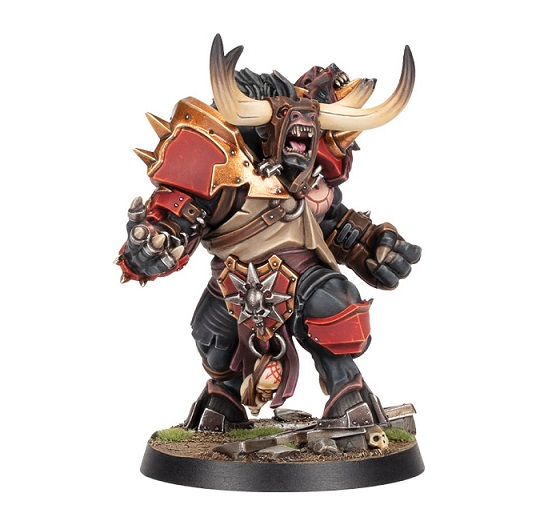

BOWL and BEERS
Home
Equipos
Liga 2023
Filius Nox (Nigromantes)
Entrenador: Albert Casado
Los Autistas de Hamelin (Skavens)
Entrenador: Arnau Casado
Kunyadoz (Orcos Negros)
Entrenador: David(Hachas)
Sol Sangrante (Orcos)
Entrenador: David Morales
Putos Roedores(Skavens)
Entrenador: David Vargas
Escarabajos Enojados (Reyes Funerarios)
Entrenador: Gines Perez
Los Profetas (Orcos Negros)
Entrenador: Jaime
Titanes de Villaguijarro (Orcos)
Entrenador: Javier Moran
La Liga Jurasica (Hombres Lagarto)
Entrenador: Jordi Carretero
Notthingan Felfas (Elfos)
Entrenador: Josep Maria
Los Satiros Concupiscentes (Hombres Bestia)
Entrenador: Oscar Lanzas
Resultados
Jornada 1 02/02/ al 11/02/
Kunyadoz VS Sol Sangrante
Notthingan Felfas VS Los Autistas de Hamelin
Filius Nox VS La Liga Jurasica
Titanes de Villaguijarro VS Escarabajos Enojados
Los Satiros Concupiscentes VS Putos Roedores
Gigantes Verdes VS Los Profetas
Jornada 2 12/02/ al 25/02/
Los Autistas de Hamelin VS Los Satiros Concupiscentes
Sol Sangrante VS Filius Nox
Notthingan Felfas VS Kunyadoz
Los Profetas VS Titanes de Villaguijarro
La Liga Jurasica VS Gigantes Verdes
Putos Roedores VS Escarabajos Enojados
Jornada 3 26/02/ al 10/03/
Gigantes Verdes VS Sol Sangrante
Filius Nox VS Notthingan Felfas
Los Profetas VS La Liga Jurasica
Escarabajos Enojados VS Los Autistas de Hamelin
Kunyadoz VS Los Satiros Concupiscentes
Titanes de Villaguijarro VS Putos Roedores
Jornada 4 11/03/ al 24/03/
La Liga Jurasica VS Titanes de Villaguijarro
Notthingan Felfas VS Gigantes Verdes
Los Satiros Concupiscentes VS Filius Nox
Sol Sangrante VS Los Profetas
Los Autistas de Hamelin VS Putos Roedores
Escarabajos Enojados VS Kunyadoz
Jornada 5 25/03/ al 14/04/
Los Profetas VS Notthingan Felfas
Kunyadoz VS Putos Roedores
La Liga Jurasica VS Sol Sangrante
Titanes de Villaguijarro VS Los Autistas de Hamelin
Gigantes Verdes VS Los Satiros Concupiscentes
Filius Nox VS Escarabajos Enojados
Jornada 6 15/04/ al 28/04/
Putos Roedores VS Filius Nox
Los Satiros Concupiscentes VS Los Profetas
Los Autistas de Hamelin VS Kunyadoz
Notthingan Felfas VS La Liga Jurasica
Sol Sangrante VS Titanes de Villaguijarro
Escarabajos Enojados VS Gigantes Verdes
Jornada 7 29/04/ al 12/05/
Gigantes Verdes VS Putos Roedores
Sol Sangrante VS Notthingan Felfas
La Liga Jurasica VS Los Satiros Concupiscentes
Kunyadoz VS Titanes de Villaguijarro
Los Profetas VS Escarabajos Enojados
Filius Nox VS Los Autistas de Hamelin
Jornada 8 13/05/ al 26/05/
Los Satiros Concupiscentes VS Sol Sangrante
Los Autistas de Hamelin VS Gigantes Verdes
Putos Roedores VS Los Profetas
Escarabajos Enojados VS La Liga Jurasica
Titanes de Villaguijarro VS Notthingan Felfas
Kunyadoz VS Filius Nox
Jornada 9 27/05/ al 09/06/
Filius Nox VS Titanes de Villaguijarro
Gigantes Verdes VS Kunyadoz
La Liga Jurasica VS Putos Roedores
Sol Sangrante VS Escarabajos Enojados
Notthingan Felfas VS Los Satiros Concupiscentes
Los Profetas VS Los Autistas de Hamelin
Jornada 10 10/06/ al 23/06/
Kunyadoz VS Los Profetas
Titanes de Villaguijarro VS Los Satiros Concupiscentes
Putos Roedores VS Sol Sangrante
Filius Nox VS Gigantes Verdes
Escarabajos Enojados VS otthingan Felfas
Los Autistas de Hamelin VS La Liga Jurasica
Jornada 11 24/06/ al 07/07/
Notthingan Felfas VS Putos Roedores
Los Profetas VS Filius Nox
La Liga Jurasica VS Kunyadoz
Sol Sangrante VS Los Autistas de Hamelin
Gigantes Verdes VS Titanes de Villaguijarro
Los Satiros Concupiscentes VS Escarabajos Enojados
<- ANTERIOR
SIGUIENTE ->
Clasificacion
Liga 2023 Invierno-Primavera Bowl and Beers
Equipo
PG
PP
PE
GF
GC
PS
Albert Casado
0
0
0
0
0
0
Kunyadoz
0
0
0
0
0
0
David Morales
0
0
0
0
0
0
David Vargas
0
0
0
0
0
0
Escarabajos Enojados
0
0
0
0
0
0
Los Autistas de Hamelin
0
0
0
0
0
0
Los Profetas
0
0
0
0
0
0
Titanes de Villaguijarro
0
0
0
0
0
0
Los Altos Elfos de Mierda
0
0
0
0
0
0
Los Satiros Concupiscentes
0
0
0
0
0
0
Noticias

Expulsion?
Thranduil, el elfo imprudente, se encontro de repente ante las autoridades de la Liga BOWL and BEERS,enfrentandose a las consecuencias de su descontrolada accion.
Frente a el, el comisionado orco cuya mirada severa dejaba claro que la diversion no justificaba la falta de respeto.
El orco comisionado, cuyo nombre era Grunk el Intolerante, golpeo su enorme martillo contra el suelo, anunciando el inicio del juicio. La sala resono con el eco metalico mientras Thranduil, visiblemente nervioso, esperaba su destino.
-Thranduil, elfo irresponsable
-rugio Grunk-.
Has violado las reglas sagradas de nuestra liga. La diversion no justifica la falta de respeto hacia las tradiciones. La defensa de Thranduil fue breve y poco convincente, pues reconocia su error y pedia clemencia. Sin embargo, Grunk, comprometido con la integridad del torneo, no mostro piedad.
-Por desafiar las normas, desvirtuar la esencia deportiva y traer la vergunza a nuestra Liga BOWL and BEERS, te expulso con efecto inmediato
-declaro Grunk con voz autoritaria.
De repente, las puertas de la sala se abrieron de par en par, revelando la presencia de Legolas, el habil arquero y amigo de Thranduil.
Con elegancia y determinacion, Legolas avanzo hacia el estrado, donde Thranduil estaba de pie, aun asimilando la noticia de su expulsion.
"-Espera, Grunk!" - exclamo Legolas,
con voz firme pero respetuosa. - "Thranduil cometio un error, es cierto, pero la esencia del torneo tambien es la camaraderia y la redencion.
Expulsarlo no solo afectaria a el, sino tambien a la unidad y el espiritu deportivo que todos valoramos en la Liga "BOWL and BEERS".
El comisionado orco, aunque inicialmente inflexible, parecio reflexionar ante las palabras de Legolas. La audiencia observaba con atencion. Despues de un momento de tension, Grunk el Intolerante dejo escapar un abrupto y, finalmente, cedio a su reincorporacion.
Titulo de la Noticia 1
Contenido de la noticia 1.
Titulo de la Noticia 2
Contenido de la noticia 2.